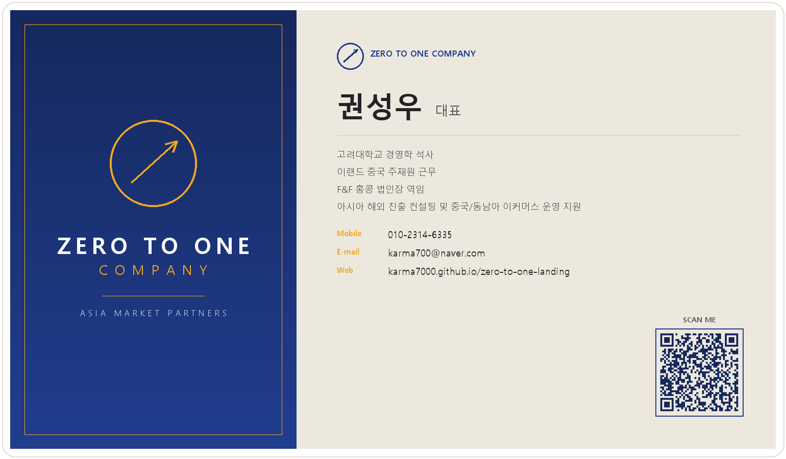

"무(無)에서 유(有)를 창조하는 제로투원(0 to 1)" — 중화권 & 동남아권 전문가

한국 기업의 뛰어난 콘텐츠와 제품이 국경을 넘어 중화권(중국,홍콩) / 동남아 시장에서 새로운 가치를 창출하도록 돕는 선구자입니다.
중화권 & 동남아권 전문가로서, 한국 기업의 뛰어난 콘텐츠와 제품이 국경을 넘어 새로운 가치를 창출하도록 돕습니다.
무(無)에서 유(有)를 창조하는 '제로투원' 철학
제로투원의 비전은 아무것도 없던 '제로(Zero)'의 상태에서 가능성을 발굴하고, 중화권/동남아 현지 시장에 적합한 전략적 실행을 통해 성공이라는 '원(One)'을 만들어내는 것입니다.
한국 기업의 뛰어난 콘텐츠와 제품이 국경을 넘어 중화권(중국,홍콩) / 동남아 시장에서 새로운 가치를 창출하도록 돕는 선구자입니다.
크로스보더 이커머스 중국 및 동남아(쇼피,라자다) 입점부터 운영까지 원스탑 컨설팅 해 드립니다.
제로투원의 모든 컨설팅은 아래 3가지 축(GRS)을 기준으로 설계됩니다.
중화권·동남아를 넘어 아시아 전역으로 확장 가능한 글로벌 시장 접근 전략. 단일 국가가 아닌 인접국 롤아웃까지 염두에 둔 로드맵을 설계합니다.
신규 진출에 그치지 않고 현지 유통·재판매(리커머스) 채널을 통해 매출을 반복적으로 순환시키는 지속가능한 사업 구조를 구축합니다.
고객사 고유의 브랜드 정체성을 현지 시장 정서에 맞게 현지화하여 가격 경쟁이 아닌 브랜드 차별화로 포지셔닝합니다.